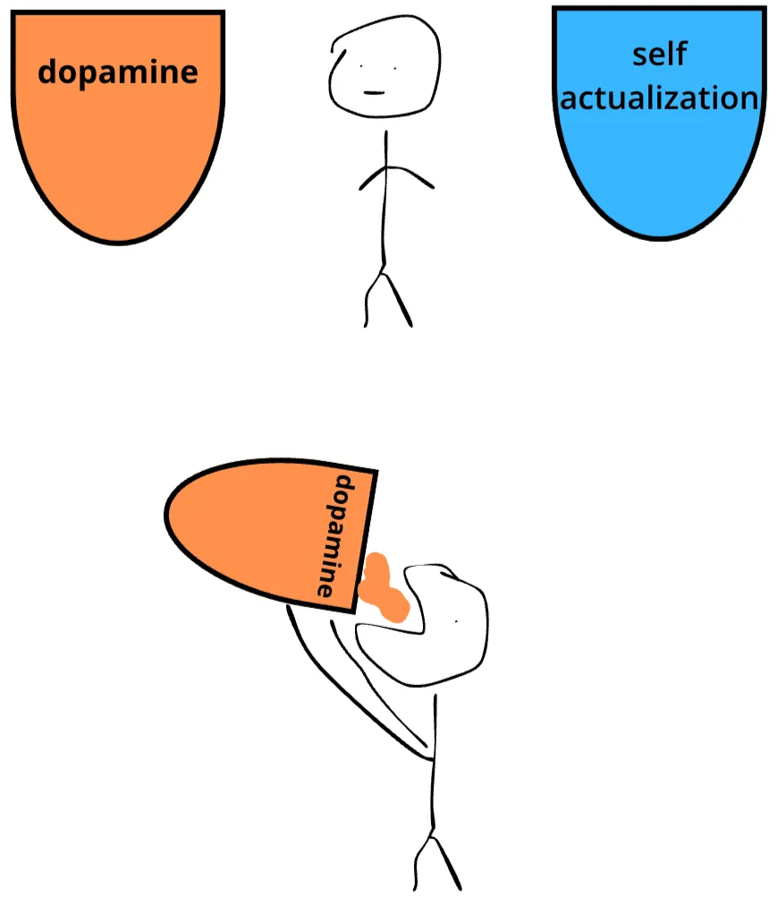
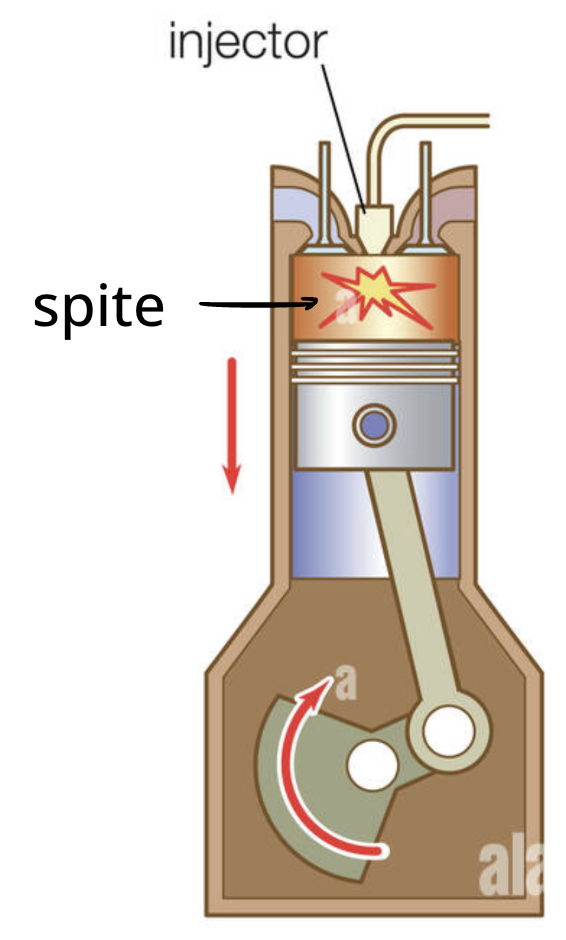
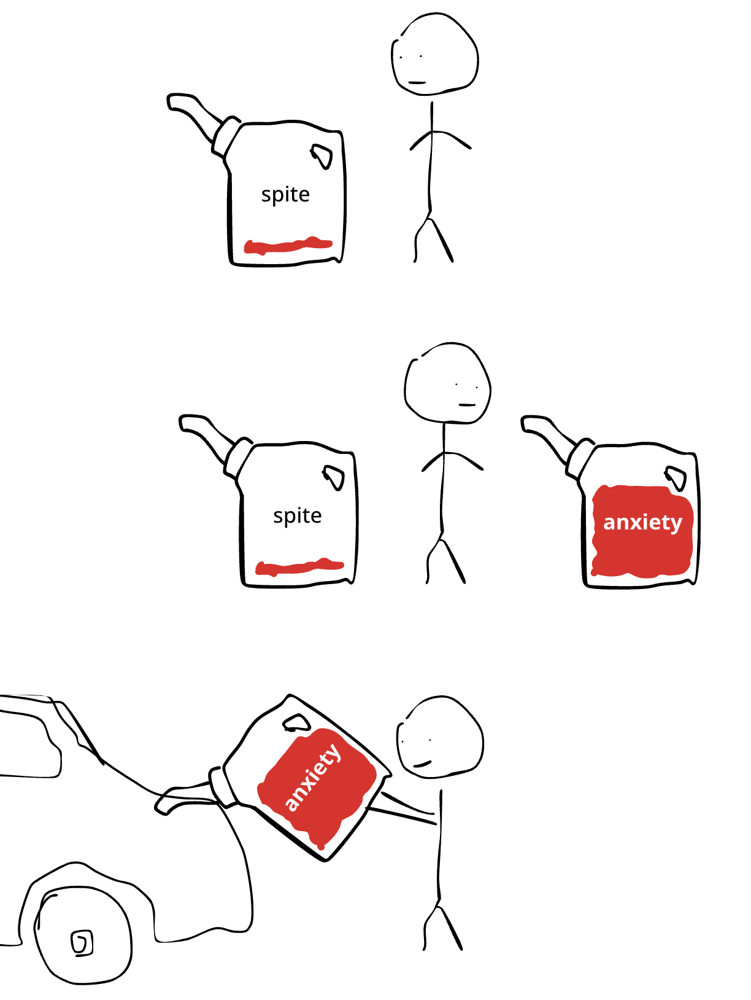
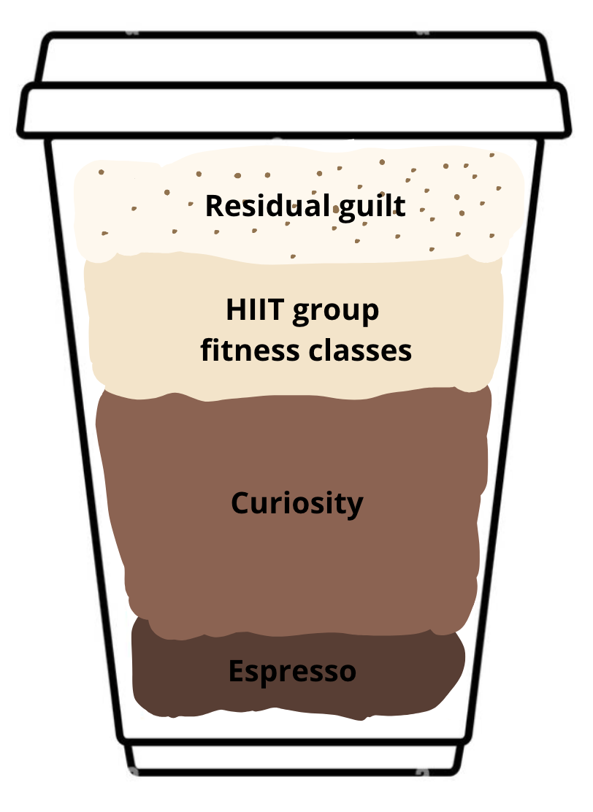

I'm four weeks into living off my lifestyle startup. The good news is I have a lot more free time to try all the things I've always wanted to try. The bad news? In the absence of external accountability, my first two weeks of freedom looked a little rough.

This note emerged from an attempt to put my own motivation through a centrifuge and see what floats to the top. The results were a bit gross.
Fuel 1: Spite
During the first chapter of my productive life, my engine ran purely on high-octane, concentrated spite.

The classic media example of spite-fueled motivation is the breakup-to-personal-transformation story, but I turned it into a lifestyle by being mad at everyone.
The problem with spite is that while it burns hot, it's not sustainable:
- You can't be angry all the time.
- If it works and you succeed, eventually you run out of spite. This, incidentally, is why most punk bands have a shelf life.
At some point in college I realized I actually liked everyone around me.
Shit.
What to do now?

Fuel 2: Anxiety
I contend that first-gen parents run the table on the anxiety-to-dollars pipeline. Bonus points if you didn't get financial support. Sure, caffeine works well, but nothing motivates quite like a deeply ingrained sense of scarcity to keep you from slacking off. You might eventually ask yourself who you're really doing this for, but by then you've got the career and health insurance to afford the therapy.
College makes for a spectacular anxiety gym. If it doesn’t wash you out entirely, the system of chasing grades, internships and leadership positions can keep you busy enough to avoid doing any real introspection. Consulting does an even better job of weaponizing insecurity.
The biggest drawback of anxiety-driven motivation is that it stops you from taking high-risk bets with potentially massive payoffs, like building a company or pursuing non-traditional careers. For me, this meant clinging to my day job for two years before finally going full-time on YM.
Which brings me to today. No gods, no masters.
Now what.

Fuel 3: Curiosity
At some point my financial needs will go up, I’ll remember that I’m not actually retired, and anxiety will kick back in.
But for now the main source of motivation is general curiosity. The building kind.
On a good day working on my startup feels similar to playing Minecraft, or Zoo Tycoon.

Part of the fun of startups is that learning is baked into the process. If you’re not doing something at least a bit novel, chances are you’re already behind. If you’re not growing you’re dying. Business is innately adversarial: you can’t just do the thing, you have to do it better than others.
Adam Smith insists capitalism is an effective system for allocating resources. But he forgot to mention how much fun it can be.
And if you ever master something, or just discover you hate doing it, there’s always the option of hiring someone. A non-zero amount of the team exists to do work I simply don’t feel like doing. Like talking to customers. Kidding. Unless.
The downside is that curiosity burns slower than fear. Intrinsic motivation flows less reliably on a cold morning than the familiar glow of external validation. As it stands I can log six productive hours a day before the urge to goof off kicks in.
Modern problems require modern solutions: I propose stimulants.
Mix 3 parts curiosity, 1 part stimulant of choice, and 1 ClassPass subscription. Shake vigorously. Serve over ice.

I’ll be drinking 2 of these a day starting next week. Will let you know how it goes.
Footnotes
1. If you ever have the luxury to try it, unemployment without financial pressure is pure bliss. One of the truths I almost wish I hadn't discovered is just how incredible it feels to not work. Of course, if you want to achieve anything meaningful, accountability inevitably creeps back in one way or another. But for now, running a low-overhead lifestyle business and choosing what to do every morning feels like an absolute dream. ↩
2. Unless you can somehow meditate yourself into feeling angry. Not sure it works that way, but if you've ever tried, please let me know. ↩
3. Consulting, law, banking, accounting. Take your pick of prestigious workplaces that specialize in hiring insecure overachievers and churning through them. ↩
4. I say this with admiration rather than regret. The way one might admire an artisanally designed mousetrap. Part of me wants to go work in consulting for three months as a bootcamp to get my discipline back. Tech doesn’t do this nearly as well, but as long as you can legibly keep comparing yourself to peers and chasing career advancement on a short loop, then you can keep the fuel burning. ↩
5. I didn’t appreciate it until I worked elsewhere, but Deloitte had a beautiful system of carrots and sticks: keeping everyone cranking for 60 hours a week, while reliably rewarding top performers and gradually pushing out everyone else. If I ever run a services business, I will absolutely steal ideas from the consulting talent playbook. ↩